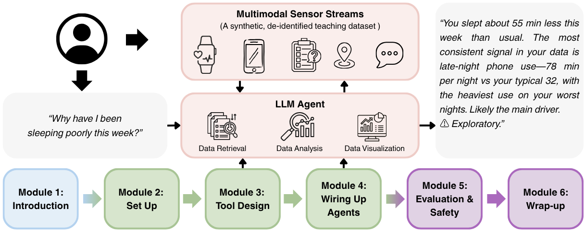

From Multimodal Sensing Data to Actionable Health Insights
Build a personal LLM health agent you can trust — instrument, evaluate, and safety-gate a working agent over a synthetic multimodal sensing dataset. Ground every claim. Catch confounds. Refuse medical advice. Runs fully offline.
“Why have I been sleeping poorly this week?”
Most consumer wearables and health dashboards can show you the data behind that question, but they cannot answer it. LLM agents — language models that call functions, run analyses, and visualize results — offer a path to turn raw multimodal sensing streams into grounded, personalized answers. In this half-day, hands-on tutorial, you will build a working personal LLM health agent from a minimal scaffold, over a synthetic, curated multimodal sensing dataset (sleep, heart rate, activity, GPS, screen time, EMA).

No prior LLM or agent experience required. We open with a concise primer, then build, evaluate, and stress-test an agent together.
A half-day session of 3.5 hours, alternating short conceptual lectures, guided coding, and a moderated panel. Every module ships with a starter notebook, reference solution, and an optional advanced exercise.
The sensemaking gap; the anatomy of an LLM agent vs. prompt-only LLM use and classical ML pipelines; recurring design tensions.
Verify your environment (the offline scripted backend needs no API key), load the sample dataset, and run a minimal tool-using LLM call.
Implement and register data-retrieval, analysis, and visualization tools the agent can compose at runtime.
Coffee & networking.
Planning, tool selection, execution, observation, response. Run the agent against open-ended questions.
What makes a “good” answer, failure modes (hallucination, unsafe advice, emergency and crisis handling, longitudinal drift), and ethics — with invited guests.
Synthesis, a roadmap of open challenges, and community Q&A.
An invited talk opens the tutorial, and Module 5 features a moderated panel on evaluation and safety with invited guests. Speakers will be announced here as they are confirmed.
Invited speaker
Invited guests from evaluation, safety, and clinical AI
The tutorial is built to be accessible to participants from non-LLM backgrounds while staying meaningful for those with prior experience.
You'll work with a synthetic, de-identified teaching dataset whose schema and feature types are inspired by the GLOBEM behavioral dataset, paired with additional synthetic records covering modalities not represented in GLOBEM. No credentialed data access is required during the tutorial, and we provide a data-privacy checklist you can adapt for your own studies.
A team spanning multimodal wearable sensing, LLM-based health intervention, conversational agents and clinical workflow evaluation, and human-centered AI for healthcare.
Links go live closer to the conference. Check back, or email us to be notified.